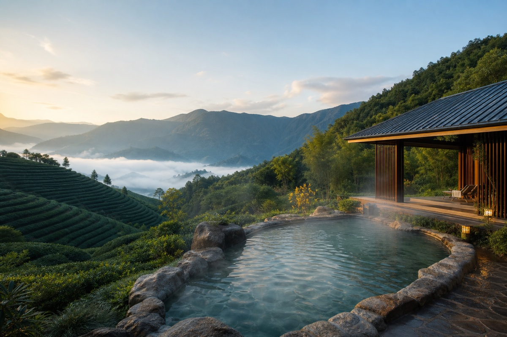
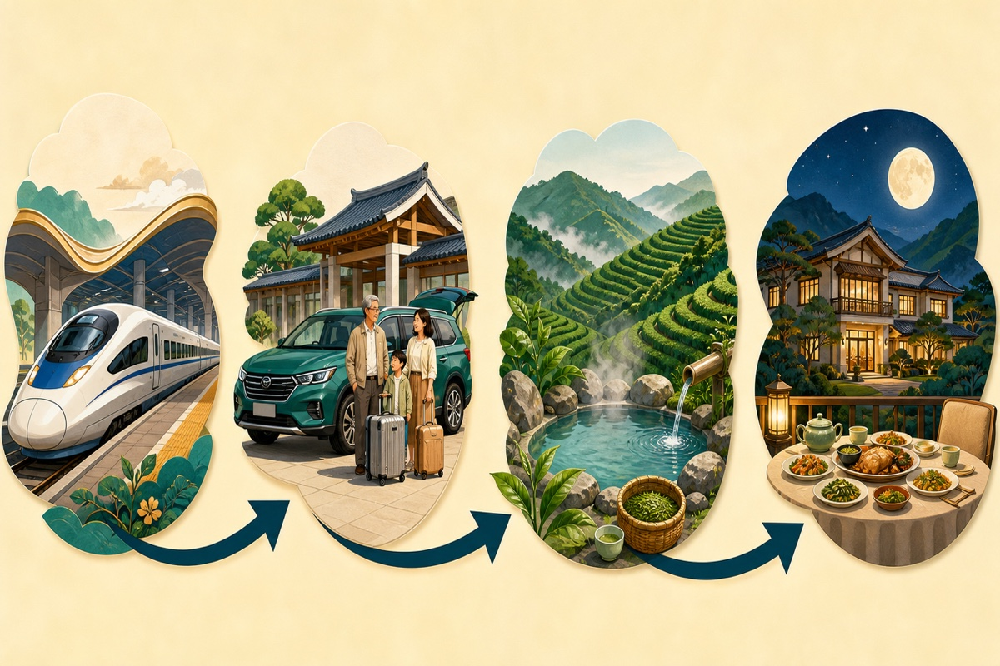

看图版 · 今日四步沿着箭头走，一眼看懂今天

上午高铁出发→
12:00厦门北取车→
下午茶山泡温泉→
晚上酒店吃晚餐
🚙核心交通高铁抵厦门北 · 取7座车进山
🎯今日必达取车时确认儿童座椅与行李空间
⏰最迟出发按高铁时间出发
🔋体力强度低强度
DAY 1
广州 → 厦门北 → 安溪
先让茶山接住一路风尘
今晚入住安溪悦泉行馆
☀ 低强度今日时间表
广州东站乘高铁前往厦门北
厦门北站取车
核对儿童座椅、行李空间和次日还车门店
车站附近简单午餐后前往安溪
车程约 1.5 小时
天气 / 体力备选
如遇高铁延误：取消茶园散步；到店先吃饭再泡汤，避免空腹泡温泉。
💡
带队人提醒
到店先让老人休息；泡汤每轮20–30分钟，中间补水，避免空腹泡温泉。